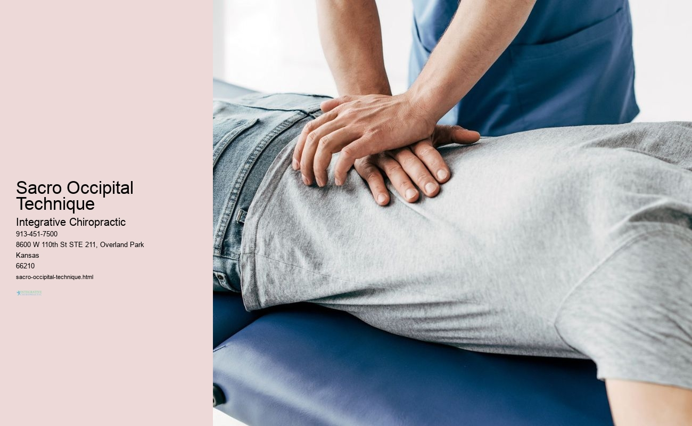

News
Chiropractic Overland Park, Kansas
Chiropractic Overland Park, Kansas
Manual Manipulation
Manual Manipulation
Diversified Technique
Gonstead Technique
Activator Method
Thompson Technique
FlexionDistraction
Extremity Adjusting
Atlas Orthogonal
Sacro Occipital Technique
Cox Technic
About Us
Contact Us

Sacro Occipital Technique
Manual Manipulation
Manual manipulation is a therapeutic technique used to treat physical ailments and pain. It involves the use of hands to massage, knead, squeeze or apply pressure on certain parts of the body in order to increase blood flow and reduce tension. This method has been around for centuries and is still used today by many healthcare professionals.
It's often used to help with muscle soreness, spasms, joint stiffness, range of motion issues as well as other musculoskeletal conditions. Manual manipulation can also be beneficial for headaches, sciatica and even menstrual cramps! By targeting specific muscles involved in the condition being treated, manual manipulation can help relieve discomfort and promote healing.
Furthermore, this method can be quite soothing for some individuals due to its slow pace and gentle touch. Moreover it offers an opportunity for those who suffer from chronic pain to get relief without having to resort to medications or surgery. However, it’s important that one consult a qualified practitioner before attempting any type of manual manipulation due to potential risks associated with it (e.g., nerve damage).
Nevertheless, manual manipulation remains a popular treatment option widely employed by medical practitioners all over the world. In fact, many patients report feeling relaxed after receiving this treatment – which makes sense considering how calming it must feel when somebody applies professional hand movements onto your body! Furthermore there are no known side effects apart from perhaps temporary soreness during or shortly after the session; however this usually subsides quickly afterwards.
Overall manual manipulation is an effective way of treating various physical ailments while providing relaxation at same time! So if you're looking for an alternative therapy that's both safe and soothing - give it a try! Who knows – you might just find yourself feeling better than ever before!
Diversified Technique —
Manual Manipulation
Diversified Technique
Gonstead Technique
Activator Method
Thompson Technique
FlexionDistraction
Extremity Adjusting
Diversified Technique is a dynamic way of approaching (physical therapy). It involves using various techniques to treat different (conditions). For instance, a patient with (knee pain) could benefit from stretching, strengthening and manual therapy. Additionally, they may also receive modalities such as heat or cold and ultrasound. It's a great way to address the multiple needs that can arise from an injury or disorder!
However, diversified technique isn't always necessary. If the patient only has one issue then maybe just one type of treatment would be enough! Furthermore, it's important to make sure that the treatments chosen are appropriate for the individual's condition. There should be no reliance on "cookie-cutter" solutions that don't take into account the special requirements of each person.
Nevertheless, diversified technique remains a valuable tool in physical therapy. By combining various methods we can create a unique plan tailored to every individual. The result? A more effective and satisfying experience for both patient and therapist alike! To conclude, while not always necessary, diversified technique can provide powerful results when used correctly!
Activator Method
Activator Method is an educational approach that focuses on learners' active participation in the learning process. The method encourages students to take ownership of their learning through engagement and interaction with materials and activities. It has been widely used in the classroom for decades, and remains one of the most popular instructional strategies today!
The main idea behind Activator Method is to engage students by giving them tasks that require problem-solving skills. Through this approach, students learn by doing instead of simply listening and memorizing facts. This helps them develop critical thinking skills and become more independent learners. Additionally, it fosters collaboration among peers as they work together to solve problems.
Furthermore, Activator Method allows teachers to easily differentiate instruction according to each student's needs. By providing activities that are tailored to individual learning styles, teachers can ensure that all learners are engaged and successful in their studies. In addition, this strategy promotes positive behavior since students feel empowered when given responsibility for their own learning experience.
In conclusion, Activator Method is a powerful teaching tool that can be utilized in any classroom setting. With its emphasis on student engagement and collaboration, it offers numerous advantages over traditional lecture-style lessons(including improved academic performance). Furthermore, it provides an opportunity for teachers to really get to know their students’ strengths and weaknesses – something essential for effective teaching!
Atlas Orthogonal
Thompson Technique
The Thompson Technique is an advanced form of chiropractic care that's becoming increasingly popular (among patients and practitioners alike!). It helps to reduce pain, improve joint movement and even improve posture! Unlike traditional methods, the technique relies on a combination of muscle work and manipulation. It can be used to treat a wide variety of musculoskeletal problems, from back pain to shoulder stiffness.
One thing that sets the Thompson Technique apart from other forms of chiropractic care is its use of drop-table adjustments – they involve a patient lying down on a special table with specially designed cushions that are dropped at certain points along the spine. This allows for more precise adjustment than conventional manual manipulation. Furthermore, it enables the practitioner to target specific areas with greater accuracy. Additionally, this method makes it easier for the patient to relax during treatment due to its gentler nature.
Another unique aspect of the Thompson Technique is its emphasis on postural re-education as part of overall treatment plan. This involves teaching patients how to sit, stand and move correctly in order to help prevent further injury or strain on their bodies. The practitioner will also suggest exercises and stretches which are designed specifically for each individual's needs – helping them build strength, flexibility and balance in all areas affected by their condition.
Finally, there are several other benefits associated with this technique; such as improved nerve communication between muscles and organs meaning better circulation and organ function plus reduced inflammation throughout the body! All these things combine together to give patients better overall health outcomes when compared with traditional chiropractic techniques alone! Overall therefore it can be seen why so many people are choosing this approach when seeking out relief from chronic pain conditions or simply trying to optimise their health in general!
In conclusion then, it's clear that the Thompson Technique has much offer those looking for an alternative means of treating musculoskeletal issues - whether acute or chronic - while also striving towards long term optimum health upkeep! Therefore if you're considering chiropractic care as part of your wellness routine then this could be something definitely worth considering!.
Sacro Occipital Technique
Sacro Occipital Technique (SOT) is an innovative technique used to treat a variety of conditions, from neck pain to scoliosis. It's based on the idea that the body needs to be in proper alignment for optimal health. This technique uses gentle manipulation and repositioning of the spinal column and other tissues in order to restore balance and alignment. It also encourages circulation, which can help reduce inflammation and improve overall well-being!
The goal of SOT is to identify areas of tension or restriction within the body and then use specific manipulative techniques to help release them. These include stretching, mobilizing, massage techniques, trigger point therapy, and joint mobilization. The practitioner will assess the patient's posture, range of motion, muscle tone, mobility patterns, as well as other factors before beginning treatment. Additionally, they may employ various supportive tools such as blocks or cushions during the procedure.
Moreover, practitioners claim that SOT can also assist with restoring normal movement patterns by releasing tight musculature around joints and improving flexibility in connective tissue systems. Furthermore, this type of bodywork may be able to facilitate emotional healing by stimulating nerve endings that are connected to deeper psychological issues.
In conclusion, while some people may have doubts about its effectiveness due to its unconventional nature; Sacro Occipital Technique has been around for decades now with much success! Moreover it offers a holistic approach which could be beneficial if you're looking for something outside traditional healthcare methods. All in all it’s definitely worth trying out if you’re dealing with chronic pain or any other condition related to misalignment!
Cox Technic
Cox Technic is a revolutionary new form of physical therapy (PT) that offers relief for pain and improved function. It's a non-surgical, spciealized treatment for back and neck pain, sciatica, herniated discs, and other spine conditions. Utilizing specially designed instruments to manipulate the spine, Cox Technic relieves pressure on nerves and relaxes sore muscles.
Moreover, it helps increase flexibility in the affected area while decreasing inflammation and scar tissue formation. Unlike traditional PT which can be slow going at times, Cox Technic treatments are fast-acting so patients experience results quickly! The technique works by creating a distraction force along with spinal decompression to reduce pressure on the vertebrae and nerves. This lowers nerve irritation as well as decreases painful muscle spasms.
Furthermore, this innovative treatment has been used successfully for many years by chiropractors across the country. With its gentle yet effective approach to healing various spine issues, there is no wonder why it has become one of the most widely used techniques in chiropractic care today. In addition to providing long-term relief from chronic back pain or disc problems, Cox Technic also helps restore lost range of motion due to injury or surgery!
To sum up, Cox Technic is an incredibly effective form of PT that provides much needed relief from low back pain that doesn't require any surgery or medication! It's a safe and reliable way to get your life back on track without fear of making matters worse. So if you're suffering from chronic back or neck ache - don't wait another second - give Cox Technic a try! Who knows? It may be just what you need for some much needed pain relief! Transition phrase: All things considered...
Frequently Asked Questions
What is Sacro Occipital Technique (SOT)?
Sacro Occipital Technique (SOT) is a chiropractic treatment technique that focuses on restoring balance to the spine and pelvis.
How does SOT work?
SOT works by applying pressure or manipulating certain areas of the body, such as the sacrum and occiput, in order to restore proper alignment and motion of the spine.
What conditions can SOT help with?
SOT can help with a variety of conditions, including neck pain, headaches, low back pain, sciatica, scoliosis, SI joint dysfunction, and more.
Who can benefit from SOT?
Anyone who is suffering from musculoskeletal pain or discomfort may benefit from SOT.
Sacro Occipital Technique